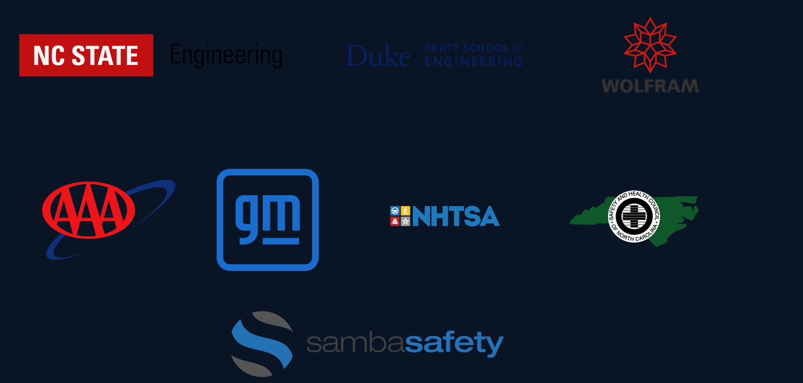
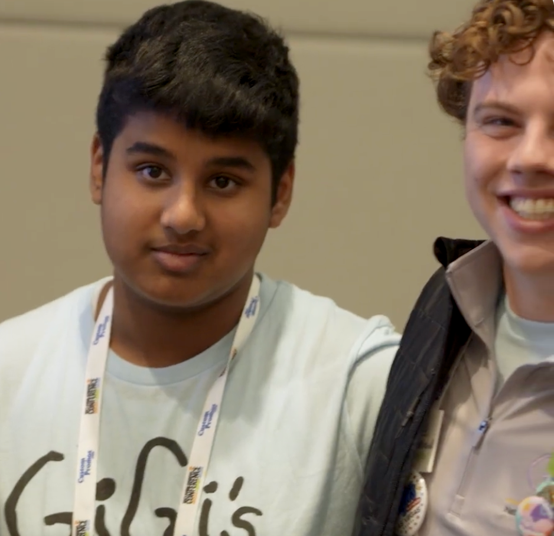
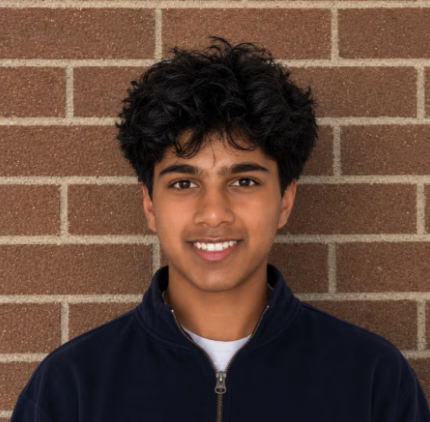

Observe locally
Camera frames entered a capacity-one buffer so stale images were dropped instead of accumulating.
Sentry × General Motors / Super Cruise
Sentry partnered with General Motors to bring a privacy-first driver intelligence layer into the Super Cruise safety ecosystem, tracking attention, drowsiness, and phone use on-device before culminating in a five-figure exit.
Sentry ecosystem
Organizations and institutions represented across Sentry’s journey. GM is Sentry’s Super Cruise integration partner.

The defining integration
Our work with General Motors connected Sentry’s on-device understanding of the driver to the Super Cruise experience. We designed a fast, privacy-aware signal layer that could communicate when attention changed without exporting continuous cabin video.
GM partnership / Super Cruise
Together with GM, we transformed raw driver observations into a clean, confidence-scored state for the Super Cruise safety ecosystem. Sentry stayed focused on the human; Super Cruise stayed focused on the road.
Camera frames entered a capacity-one buffer so stale images were dropped instead of accumulating.
Eye closure, gaze, head pose, yawns, nods, and phone evidence became calibrated temporal signals.
A unified state separated observation quality, behavioral risk, severity, and alert policy.
Compact state events supported timely awareness and handoff logic for GM without moving raw cabin video off-device.
Technical architecture
The system kept latency, privacy, and reliability aligned by running the core pipeline at the edge and emitting structured events instead of continuous video.
PICAMERA2 → MEDIAPIPE → STATE MACHINE → BLEPicamera2 captured at 640×480 and 20 to 30 FPS. A latest-frame slot with capacity one applied backpressure automatically, preventing old frames from creating dangerous lag.
MediaPipe Face Landmarker supplied 478 landmarks. Sentry computed EAR, MAR, iris gaze, calibrated yaw/pitch/roll, blink duration, PERCLOS, yawn, and nod windows without recognizing who the driver was.
State machines used persistence, rolling windows, hysteresis, cooldowns, and stable-forward dwell. Low-quality or missing observations became “unknown,” never automatic evidence of risk.
A YOLOX-Nano / NCNN path ran on the driver crop at 5 to 10 Hz. Geometry, mount-region exclusion, gaze context, and persistence separated “phone present” from confirmed handheld use.
The Raspberry Pi acted as a GATT peripheral, sending compact versioned packets to the mobile app. Routine telemetry was coalesced; critical alerts used a bounded priority queue.
Sentry stored numeric events and trip summaries by default, not continuous cabin video. Risk inference described observable behavior and never claimed to determine intoxication.
The outcome
What began as a focused driver-safety prototype became a compact technical asset: a working edge architecture, a clear OEM integration story, and defensible privacy choices. That body of work led to a five-figure exit.
A meaningful first company outcome created by turning constrained hardware, noisy human signals, and strict safety boundaries into a system another team could build on.
What transferred
Real-time capture, inference, state, alerts, and mobile transport.
Typed events and versioned BLE communication.
A privacy-first integration approach for assisted driving.
Co-founders
Sentry was co-founded by a team that moved fluidly across computer vision, embedded systems, mobile integration, product, and go-to-market.

Product & systems

Vision & intelligence
Platform & integration